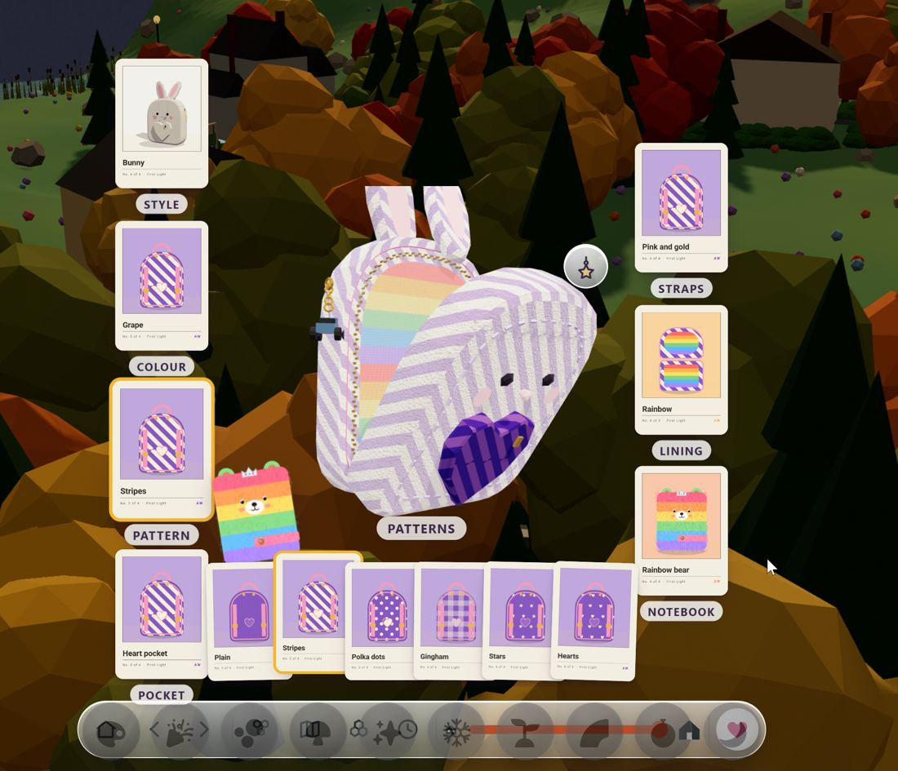

Backpack, charms and Abbie's look
Four briefs, for you to review before anything else gets built. These are drafts: nothing on this page is in the game yet.
The short version. The backpack failed because it was being asked to be three things at once: a bag of things, a dress-up toy and an upgrade shop. On top of that, two sets of sessions built on it in the same hour without a shared plan. The fix is to give each job its own place:
- The backpack only carries. She opens it to see and use what she found.
- Dressing Abbie, her backpack and her buggy happens in one dressing room, reached from the mirror.
- Charms become the heart of it. You earn them out in the world, they jingle on the bag, and each one unlocks a small power.
Four choices for you are at the bottom of the page.
1What went wrongBrief
Nine versions of the backpack in about nine hours, from your first ask at 11:53 AM to tonight's default look at 9:00 PM. Here is each one, who built it, and why it didn't hold.
| When | What was built | By | Why it didn't hold |
|---|---|---|---|
| 11:53 AM | Half shell. 10 styles and 5 facets, changed with arrows and five orbs on the open bag. | this thread | Arrows and orbs were developer controls. You couldn't see what a change would look like before you made it. |
| 12:34 PM | Decorating with cards. Tap a part of the bag, a hand of cards is dealt, drop one on the bag. | this thread | Cards are how you act on the world as a god. Using them to dress a bag broke that rule, and a whole hand of cards took over the screen. |
| 2:37–7:30 PM | Higher-fidelity pass, worn in FPS, Meshy charms. | this thread | These held up, and they stay. They are the good part. |
| 6:55 PM | Floating mini with card slots. Seven card slots around the bag, and a hand along the bottom. | this thread | Fourteen cards on screen at once, covering the world (your screenshot below). This is the one you called "NOT working at all". |
| 7:39 PM | Left bar and notebook. A small real backpack on a glass bar, with the notebook under it. | this thread | This held up and it stays. Opening the bag still led into the card slots, though. |
| 8:16 PM | Loadout beads. A bead on each part of the bag, and a small strip of swatches beside it. | this thread | It was smaller, but it still put dressing inside the inventory. Thirty minutes later it was removed by #535. |
| 8:50 PM | Upgrades instead of facets (#535). Pockets and Keyring levels, bought with stars. | ChatGPT dispatch | It was written without seeing the loadout that had just shipped. It added a shop and a currency (stars) that nothing else in the game uses. |
| 8:51 PM | Zip compartments and close-up inspection (#536). | ChatGPT dispatch | A good idea that stays. It was built in parallel into the same file, on top of the upgrades. |
| 9:00 PM | Abbie's default backpack (Bunny, Grape, Stripes…). | this thread | Waiting to merge. It is just data, so it works with any design. |
| about 9 PM | Wardrobe study (#537), asked to be a study first, with no build. | ChatGPT dispatch | The right instinct. Its mockup is folded into brief 4 below. |
Five reasons it kept failing
inventory.mjs and backpack.mjs between 8 and 9 PM. Each change was reasonable on its own. Together they replaced each other within the hour.inventory.mjs?v=13, /simulations/inventory.mjs, ./inventory.mjs), and whichever copy arrives first draws the bag. That is a real hazard, and the fix is in the build order: one address, plus a small "new version" nudge when an open tab falls behind.
2The backpack, re-imaginedBrief
From first principles: how would Abbie know what she has? She carries it. So the backpack is a thing she carries, not a menu.
Which way of acting is it?
Tiles create the world, cards act on it as a god, and the HUD runs the simulation and the app. None of those is the backpack. The backpack belongs to the fourth way, playing as Abbie: the left bar of things her character touches, and the bag on her back in FPS. So it never deals cards, never opens a shop, and never shows a list.
Three verbs, three places
Carry
Things she picks up fly into the bag with a soft zip and a jingle. The small bag on the left bar fills out a little. When it's full, she says "My backpack's full!" and nothing else pops up.
Open
The bag comes to the middle and unzips. This is the 3D object from #536, and it stays. Each pocket holds one kind of thing. Tap a thing and it comes up close with one line about it, and one action: use it, give it, or put it back. Tap anywhere empty to zip it up.
Dress
Not inside the backpack at all. There is one dressing room for Abbie, her backpack and her buggy, reached from the mirror on the left bar or from her bedroom at home. It uses the small FPS-style slots you asked for: tap a part, pick from a short row.
Getting bigger: upgrades that you can see
#535 asked for standard inventory upgrades, and that ask stands. In this design they don't get their own panel. When Abbie earns a charm milestone, the bag gets a new pocket sewn on, and you see it happen: a needle-and-thread moment, a pocket that wasn't there before, and room for more things. That is the Animal Crossing pocket upgrade, shown on the object. There are no stars to spend and no shop. Choice B below asks whether you'd rather keep a choice of upgrades.
- The real 3D bag, worn in every game, with charms that jingle
- The left bar and the notebook
- Zip pockets and the close-up of each thing (#536)
- Use a thing: embers charge world effects
- Abbie's default look
- The loadout slots, moved to the dressing room
- Cards for dressing (all of them)
- Slots and beads on the open backpack
- The upgrades panel and stars as money
- The backpack register on the chronograph
- Three copies of the backpack code
- Decorate mode on the old study page
3Charms, front and centreBrief · with the Charms thread
Charms are the one reward in Abbie's World. They should feel like the point of playing: you see them out in the world, you go and get them, and then everyone can see you have them.
The life of a charm
A gold medallion floats over the place that gives it, with a column of light. It's like a GTA pickup, and you can see it from across town. Ones you haven't earned yet show as padlocks on the town board.
Win the game there. The charm flies out of the medallion and onto her keyring with a bright jingle, the padlock springs open, and Abbie says its name.
It hangs on her backpack and swings and clinks as she runs, drives and jumps, in every game. That is the Call of Duty and Apex weapon charm: being seen is the reward.
Every charm unlocks one small power, the way A Short Hike's feathers give you more climb. The floppy already opens the Polaroid phone, and the toy car already gives fire wheels. Proposal: every charm gets one.
Her jewellery box at home keeps the whole set, each charm under a little glass dome, with empty spots for the ones still to find. Tap one on the keyring and the camera closes in.
Charms can be updated. Replay its game and the charm moves up in metal: bronze, then silver, then gold. A new model can replace an old one without anyone losing the charm they earned.
Where charms show up
- The opening: charms circle under a spotlight while the world loads, then fold into the bag. This is already live.
- The town: medallions with halo beams, where each mission starts, and the "Collect the Backpack Charms" track. These are drafted in the charms study but not in the town yet.
- The backpack: the keyring is its own pocket when the bag is open, and the charm camera is one tap away.
- Every game she's in: the worn bag with its jingle (
backpack-wear.mjs, already in the FPS levels). - The dressing room: which charms hang on the bag is a slot of its own.
Today, and what's missing
- Eleven charms are defined. Ten have Meshy models; the floppy disk and rocket got their textured versions tonight. The toy car is waiting for your OK to spend 30 Meshy credits.
- Not built yet: the charm pieces in the town, hero art for moon cheese and the toy car, a model for the upgrade, the padlock springing open, powers for most charms, and charms on Ani's side.
- The Charms thread asks for one record per charm: its id, name, quest, place, art, sound, track and blueprint. The chest, the town board, the backpack and the track would all read that one record. Each charm also gets its own jingle, and the Heart stays the crown of the set.
- How many hang on the bag at once is still open. Today it's two, and the rest stay in the jewellery box. That is choice D.
4Abbie's look, and one way to dress anythingBrief · with Character Studio
Abbie's look should be hers to change, just like her backpack and her buggy, and all three should change the same way.
The dressing room
Tap the mirror on the left bar, or the wardrobe in her bedroom. She steps onto a little turntable in the middle of the screen with the world still behind her; nothing is blurred or dimmed. Small glass beads sit on her slots: hair, top, bottom, shoes, backpack and charms. Tap a bead and a short row of choices opens beside her, never over her. Tap one and she's wearing it. Swipe and the turntable turns to her backpack, then her buggy, and they work the same way.
This is the loadout you asked for at 8:16 PM, the FPS gunsmith idea, in the place it belongs. The code already exists (loadout.mjs), and the carwash garage already uses it for the buggy.
Rules that don't bend
- Faces are designed and never redrawn, and never made from photos.
- Clothes always go over the smooth fitted base layer. PG, always.
- Every outfit part names its source and its licence.
- One 20-bone skeleton is shared by every hero.
- An outfit is a whole baked model: suit or tee, 24 hero files in all. You can't swap a top on its own yet.
- Materials are named by role (skin, suit, boots, hair), so recolouring each role works today.
- The backpack already mounts on the chest bone in every game. That is the pattern for every accessory.
- Clothes as separate parts on the same 20 bones, so every move still works.
- A slot list per model: each slot changes a bone part or a material role.
- One small saved look per character (slot to part, plus colours), so a rebuild can replay it.
In two steps
- Colours first. Recolour hair, top, bottom and shoes by material role on today's models, in the dressing room with the backpack and buggy. This needs no new art.
- Then parts. Separate garments on the shared skeleton, a few per slot, built low poly from a recipe with their provenance like every other asset. Character Studio is writing up the parameterized base for this now.
✓Four choices for you
A tap on each is all I need. Nothing gets built until you've looked.
Build order once you've chosen
- One copy of the backpack code, and a "new version" nudge for open tabs.
- Strip the open backpack down to pockets, the close-up and use.
- The dressing room, with the backpack first, then the buggy, then Abbie's colours.
- Charm moments: one record per charm, the padlock pop, the keyring pocket, bronze to gold, then powers.
- Garment parts on the shared skeleton, with Character Studio.
Each step gets a preview link before it goes live. From now on, the ChatGPT dispatch asks about the backpack come through this brief, so two builds can't replace each other again.
Drafted by the Backpack thread, Friday 23 October 2026, about 9:30 PM. Charms brief written with the Charms thread, look brief with Character Studio.